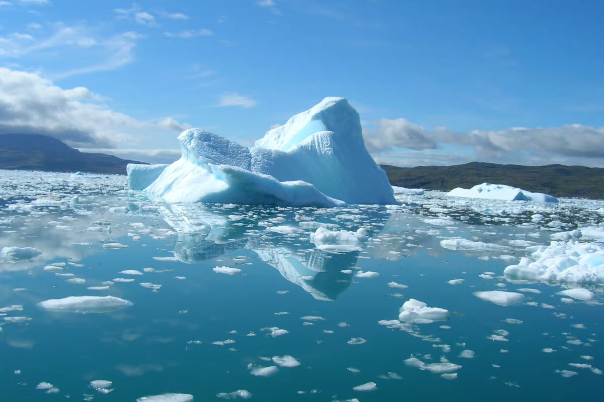
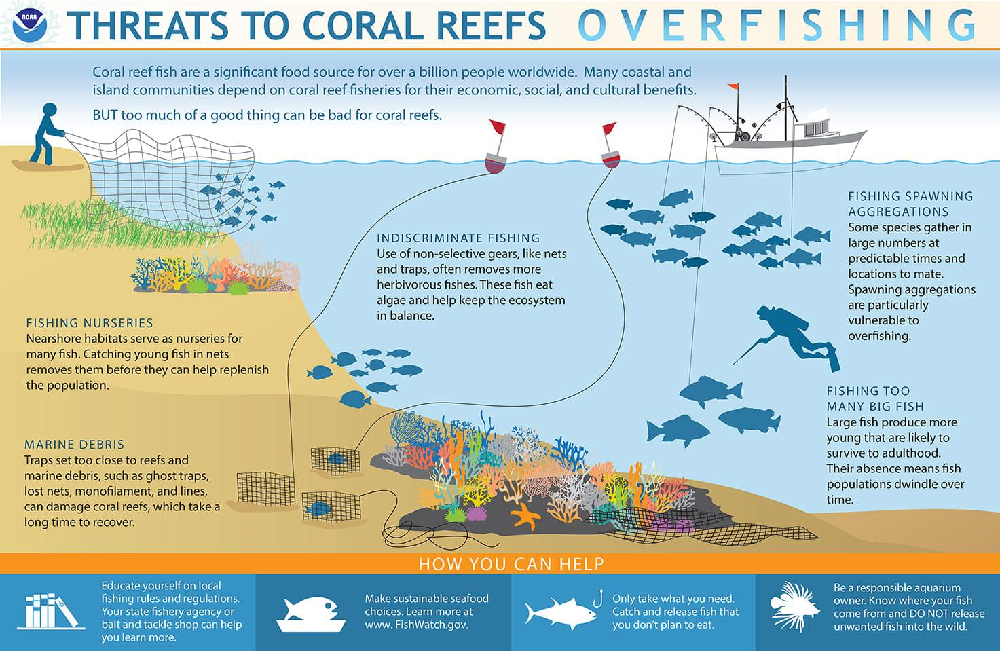
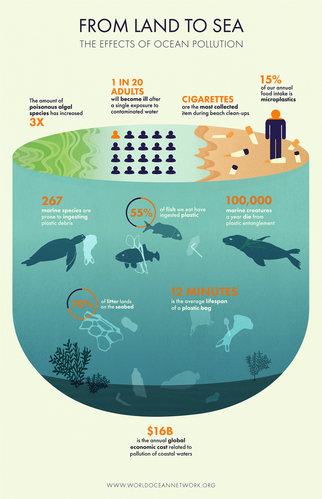

PRESERVING MARINE BIODIVERSITY: CHALLENGES AND SOLUTIONS
Overview
Marine biodiversity, encompassing the rich variety of life forms inhabiting oceans, seas, and coastal areas,
is fundamental to the health of our planet. Yet, this intricate web of life faces unprecedented challenges due to human activities,
climate change, and environmental degradation. As we strive to protect our oceans,
achieving Sustainable Development Goal 14 (SDG 14) - "Life Below Water" - becomes increasingly imperative.
Let's delve into the challenges confronting marine biodiversity and explore potential solutions to safeguard these vital ecosystems.
Challenges Facing Marine Biodiversity
Some cruicial challenges faced in the task of preserving marine biodiversity are:
Overfishing and illegal fishing. Unsustainable fishing practices, overfishing of certain species, and the proliferation of illegal, unreported, and unregulated (IUU) fishing activities threaten marine biodiversity, disrupting delicate ecosystems and depleting fish populations.
Pollution. Marine ecosystems face pollution from various sources, including plastic waste, chemical pollutants, oil spills, and agricultural runoff. These pollutants degrade water quality, harm marine life, and contribute to the formation of dead zones where oxygen levels are too low to support life.
Climate change. Rising sea temperatures, ocean acidification, and extreme weather events linked to climate change pose significant threats to marine biodiversity. Coral bleaching events, loss of habitat, and disruptions to migratory patterns jeopardize the survival of countless marine species.
Oil Spills. The consequences for marine ecosystems of unintentional or intentional oil spills from shipping, offshore drilling, and industrial sites can be disastrous. Oil spills cover marine life and their environments, harming coastal ecosystems and biodiversity over time.
Invasive species. The introduction of non-native species into marine environments can have detrimental effects on native biodiversity, outcompeting indigenous species, altering food webs, and disrupting ecosystem balance.

Impacts
The challenges facing marine biodiversity have significant impacts on ecosystems and human societies. Overfishing and illegal practices threaten food security and livelihoods, while pollution poses risks to both marine life and human health. Climate change exacerbates these challenges, leading to habitat loss and increased vulnerability to extreme weather. Habitat destruction and invasive species further degrade marine ecosystems, compromising their ability to provide essential services. Addressing these challenges requires global cooperation to protect marine biodiversity and ensure the well-being of both ecosystems and communities.


Solutions
Implementing solutions to preserve marine biodiversity is crucial. Sustainable fisheries management, pollution control measures, and climate change mitigation strategies are key. Conservation efforts, including marine protected areas and habitat restoration, are essential. Preventing the spread of invasive species is also vital. By taking these actions, we can protect marine ecosystems and ensure their health for the future.